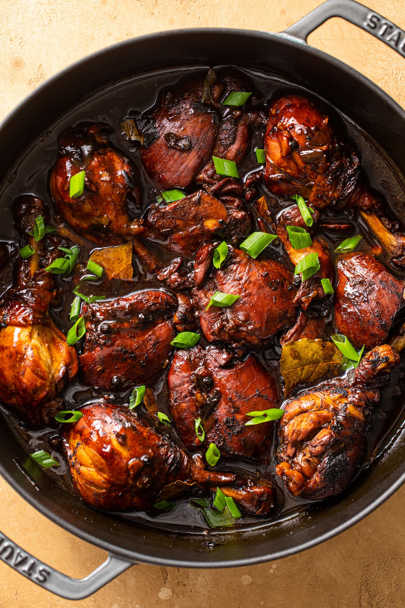

Home
Chicken Adobo

Chicken adobo is cooked in soy sauce, vinegar, garlic, bay leaves, and whole peppercorns. The Chicken becomes tender, and the asuce turns salty, Sour and garlicky. That is really the beauty of it. You do not need many ingredients to make something that feels complete.
Almost every Filipino has its own adobo. Some make it saucy. Others cook it until the sauce is almost gone. Some add coconut milk, potatoes, sugar, or chili.
Ingredients
- 2 lbs Chicken - Bone in, skin on thighs and drumsticks are what I use. Dark meats stays moist.
- 4 tablespoons Soy Sauce - Filipino brand like Silver Swan or Datu Puti. Kikkoman or any regular soy sauce will work, but the result will be lighter.
- 4 1/2 White vinegar - Cane vinegar or any white vinegar is fine. Do not use apple cider or balsamic for adobo. The flavor is not right.
- 10 cloves Garlic - A lot. A whole head is normal, crush the cloves with the side of a knife so the flavor comes out faster.
- 3 pieces Dried bay leaves - Two or three pieces. They give the sauce a soft herbal note in the background.
- 1 teaspoon Whole black peppercorns - About a teaspoon. Whole not ground/ Whole peppercorns release flavor slowly during the simmer.
- 1 tablespoon Sugar - Just a teaspoon. It rounds out the saltiness from the soy sauce and the sourness from the vinegar. You can skip it if you do not want any sweetness.
- 1 1/2 cup Water - Enough to braise the chicken. Most of it cooks off.
- 4 tablespoons Cooking oil - Any neutral oil for pan frying.
Steps
- Marinate the chicken
- Crush the garlic using a mortar and pestle.
- Combine the chicken, soy sauce, and crushed garlic in a large bowl. Mix well.
- Marinate for at least 1 hour. The longer the chicken marinates, the better the flavor.
- Separate the chicken from the garlic and marinade. Set the garlic and marinade aside.
- Fry The Chicken
- Heat a cooking pot and pour in 3 tablespoons of cooking oil.
- Once the oil gets hot, pan fry the marinated chicken for 2 minutes per side. Remove the chicken from the pot and set it aside.
- Simmer
- Pour the remianing cooking oil into the same pot. And the garlic from the marinade. Saute until it satars to brown.
- Put the chicken back into the pot. Add the remianing marinade, whole peppercorns, and dried bay leaves.
- Pour in the water and let it boil.
- Cover the pot and simmer for 30 minutes, or until the chicken becomes tender.
- Add Vinegar And Finish
- Pour in the vinegar. Let it boil before stirring. Stir and continue simmering for 15 minutes.
- Add the sugar and salt as needed. Stir, then turn the heat off. Transfer to a serving plate. Serve hot with rice.
If you want the sauce thicker, simmer it longer with the cover off. If you want more sauce for the rice, take it off sooner. More recipes...